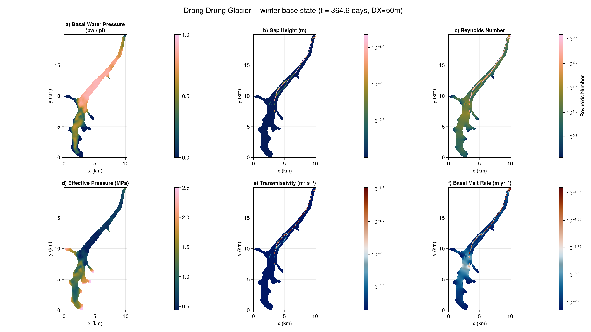

Drang Drung Glacier
Applies Shakti to real data: the winter subglacial hydrology of Drang Drung Glacier, Zanskar Valley, Ladakh (western Himalaya), from Thota, Vijay, Sommers, Banerjee, Mey and Motagh (2026), doi:10.1017/jog.2026.10150 (data: 10.5281/zenodo.17593643). Unlike Helheim Glacier's large outlet glacier, this is a small alpine/mountain glacier – the same native ISSM/SHAKTI unstructured-mesh pipeline applies (2408 vertices, 4300 elements, a much smaller mesh than Helheim's 6371/12472), rasterized here at DX=50m with dt=1800s (30 minutes).
This page shows the same steps as Helheim Glacier but does not re-run the simulation at doc-build time: a full year (17520 steps) at this resolution takes about 37 minutes. The code below is illustrative; the figure at the bottom is from a real run.
Loading the raw mesh
Same MATLAB-classdef-via-MAT.jl structure as Helheim's .mat file.
using Shakti, MAT
d = matread(joinpath(DATADIR, "DD_SHAKTI_winter_1yr.mat"))
md = d["md"].d
mesh_s = md["mesh"].d
xs, ys = vec(mesh_s["x"]), vec(mesh_s["y"])
elements = Int.(mesh_s["elements"])
Nv, Ntri = Int(mesh_s["numberofvertices"]), Int(mesh_s["numberofelements"]) # 2408, 4300
bed = vec(md["geometry"].d["bed"])
thickness = vec(md["geometry"].d["thickness"])
G_in = vec(md["basalforcings"].d["geothermalflux"])
friction = vec(md["friction"].d["coefficient"]) # uniformly 500.0
B_visc = vec(md["materials"].d["rheology_B"]) # 0C "temperate ice", Cuffey -- softer than Helheim's
A_visc_vertex = B_visc .^ (-3.0) # Glen's law: A = B^(-n)Rasterizing onto a regular grid
Identical barycentric-interpolation approach to Helheim's, at DX=50m.
const DX = 50.0
# ... same per-triangle bounding-box walk + barycentric weights as Helheim.jlThe terminus: a proglacial-lake boundary
Drang Drung's terminus condition is a Dirichlet head offset representing a 3.0m-deep proglacial lake (Ramsankaran and others 2023).
Building the state
LinearSlidingLaw again (taub = C^2*N*u_b), here with a spatially uniform C=500 – this dataset has zero sliding velocity and zero external meltwater input, so the run is a pure geothermal+frictional-melt spin-up, the same role Helheim's winter base state plays.
p = ModelParameters(rho_i = 917.0, rho_w = 1000.0, nu = 1.787e-6, n = 3.0,
omega = 1e-3, br = 0.0, lr = 1.0, ct = 0.0, cw = 4.22e3,
b_min = 1e-3, b_max = 1.0)
mi = ConstantMeltInput()
sl = LinearSlidingLaw(grid, fill(500.0, Nx, Ny))
state = State(grid)
set_initial_conditions!(state, grid, p, sl, mask, A_visc, zb, zs, gap, G, ub_x, ub_y, ieb, taub_x, taub_y)Running to the winter base state
dt=1800s, tsteps=17520 (365 days).
ls = CholeskyDirectSolver(grid)
ps = PicardSolver(500, 1e-6, ls, grid)
sim = Simulation(grid, state, 17520, 1800.0, p, "implicit",
["h", "pw", "po", "b", "N", "mdot", "Re", "K"], mi, sl;
ps = ps, which_observer = "IO", which_file_writer = "NetCDF",
path = "drangdrung_winter.nc")
run!(sim)Results
Final state (t=364.6 days): (a) water pressure as a fraction of overburden, (b) gap height, (c) Reynolds number, (d) effective pressure, (e) transmissivity, (f) basal melt rate. A single channelized drainage path is visible, running from the tributary confluence down the main trunk to the terminus – the same qualitative pattern shown in the paper's supplementary Figure S5 ("Winter effective pressure and subglacial water flux simulated in SHAKTI-ISSM").
